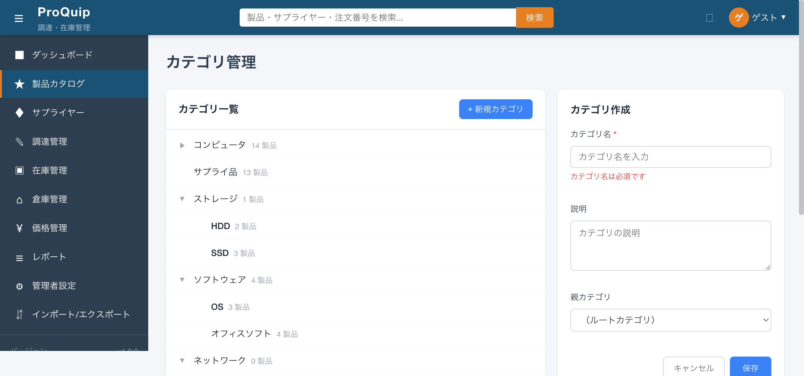
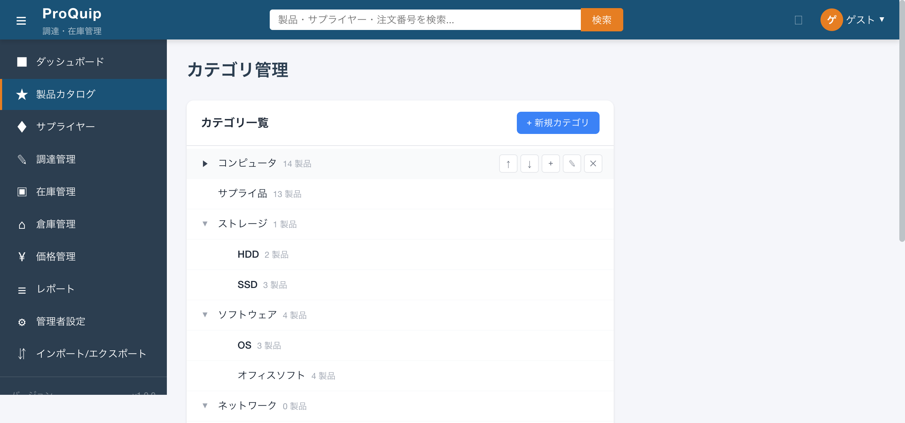
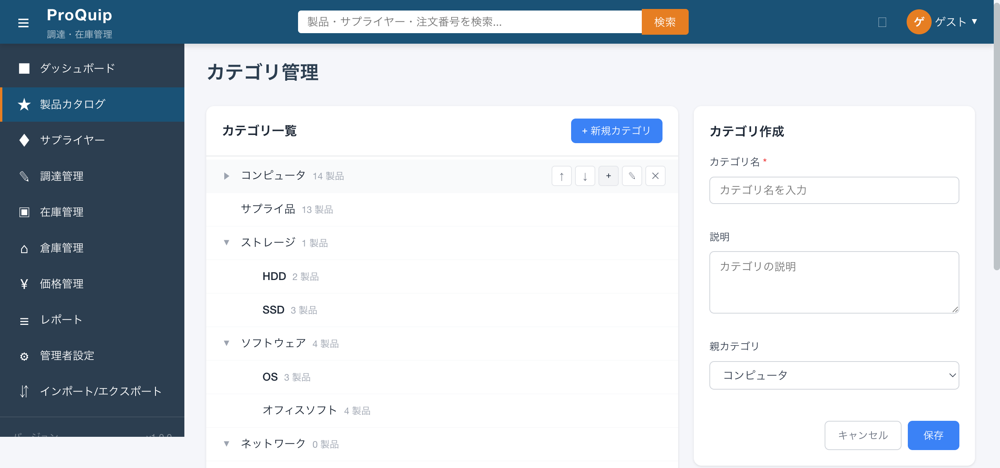
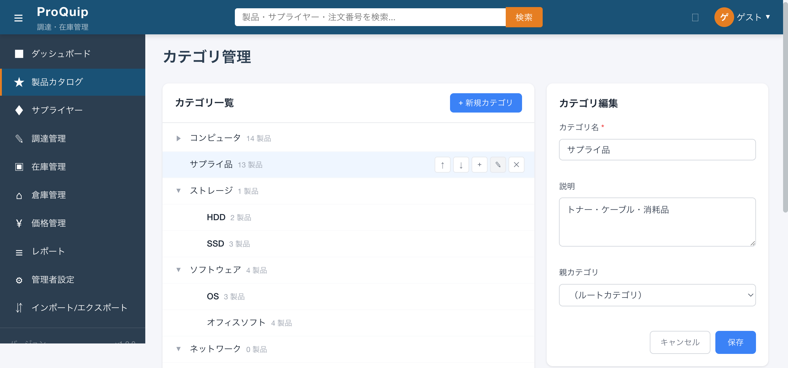
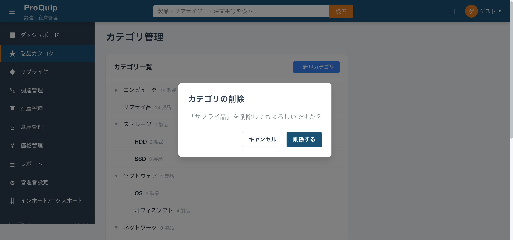

カテゴリ管理画面の初期表示。左側にカテゴリツリー、右側は編集パネル非表示。
screenshots/F-03/F-03-03_category-management_initial.png
親子関係を持つカテゴリを階層ツリー形式で表示する領域。各カテゴリの名前・製品数を表示し、展開/折りたたみ・CRUD・並べ替えの各操作へのエントリーポイントを提供する。
製品カタログの分類体系を視覚的に把握し、カテゴリの追加・編集・削除・並べ替えを行うため。
| 項目名 | 表示条件 | 値の取得元 | 備考 |
|---|---|---|---|
| ページヘッダ「カテゴリ管理」 | 常時 | 固定文字列 | app-page-headerコンポーネント、description=「製品カテゴリの階層管理」 |
| パネルタイトル「カテゴリ一覧」 | 常時 | 固定文字列 | tree-panelのpanel-header内 |
| 展開/折りたたみアイコン（▼/▶） | 子カテゴリがある場合 | node.expanded状態 | 子カテゴリなしの場合はスペーサー（20px幅） |
| カテゴリ名 | 常時 | GET /api/products/categories → category.name | font-weight: 500 |
| 製品数 | 常時 | GET /api/products/categories → category.productCount | 「N 製品」形式、font-size: 12px、色: #9ca3af |
| アクションボタン群（↑↓+✎✕） | ホバー時（opacity: 0→1） | - | 各ボタンは26x26px、hover時に表示 |
| インデント | 子カテゴリ | node.level | padding-left: (level * 28 + 16)px |
| 編集中ハイライト | editingCategoryId === node.category.id | - | 背景色 #eff6ff |
| 空状態メッセージ | カテゴリ0件 | - | app-empty-state「カテゴリが登録されていません」 |
| ローディングスピナー | isLoading=true | - | app-loading-spinnerコンポーネント |
なし（表示専用領域）
| 操作名 | トリガー | 実行内容 | 正常時の結果 | 異常時の結果 | 状態変化 |
|---|---|---|---|---|---|
| ツリー行ホバー | マウスオーバー | アクションボタン群の表示 | opacity: 0→1、背景色#f9fafb | - | なし |
ページ読み込み時にGET /api/products/categoriesを呼び出し、ルートカテゴリとその子カテゴリを再帰的に取得。ツリー構造を構築し、全ノードを展開状態（expanded=true）で表示。現行データ: ルートカテゴリ6件（コンピュータ/サプライ品/ストレージ/ソフトウェア/ネットワーク/周辺機器）、子カテゴリ含む計20件。
API呼び出し失敗時: エラーバナー「カテゴリの取得に失敗しました。」を表示（error-banner、赤背景）。
AuthGuardによるログイン必須のみ。CategoryResourceに@RolesAllowedは未設定のため、全ロールがアクセス可能。FE側もロール別表示制御なし。
初期状態: isLoading=true → API完了後: isLoading=false、categoryTree/flattenedTreeが構築される。
| API ID | method | path | request | response | error response | 根拠 |
|---|---|---|---|---|---|---|
| - | GET | /api/products/categories | なし | CategoryDto[]（id, name, level, active, parentId, parentName, productCount, children[]） | 500 | Network観測 reqid=32 |
| ファイルパス | 関数/クラス/メソッド名 | 確認内容 |
|---|---|---|
| proquip/proquip-frontend/src/app/features/products/category-management/category-management.component.ts | CategoryManagementComponent.loadCategories() | カテゴリ取得・ツリー構築 |
| 同上 | buildTree(), setLevels(), flattenTree() | ツリー構造の構築とフラット化 |
| proquip/proquip-web/src/main/java/com/proquip/web/resource/CategoryResource.java | CategoryResource.listCategories() | NamedQuery "Category.findRootCategories" で parent IS NULL のカテゴリを取得し、再帰的にtoDto |
| proquip/proquip-ejb/src/main/java/com/proquip/ejb/entity/product/Category.java | Category | category テーブル: name(200), code(50), description(1000), level, parent_id, children(OneToMany), products(OneToMany) |
| proquip/proquip-frontend/src/app/shared/models/product.model.ts:84 | Category interface | id, name, description, parentId, productCount |
| proquip/proquip-frontend/src/app/shared/services/product.service.ts:67 | ProductService.getCategories() | GET /api/products/categories |
High
新規カテゴリ作成フォーム表示状態。
screenshots/F-03/F-03-03-002_create-form.png
「+ 新規カテゴリ」ボタン。クリックすると右側に「カテゴリ作成」フォームを表示し、新しいルートカテゴリまたは子カテゴリを作成する。
新しい製品分類を追加するため。
| 項目名 | 表示条件 | 値の取得元 | 備考 |
|---|---|---|---|
| 「+ 新規カテゴリ」ボタン | 常時 | 固定文字列 | btn-add: 青背景(#3b82f6)、白文字、panel-header右側 |
| 項目名 | 型 | 必須/任意 | 入力制約 | 初期値 | バリデーション | 備考 |
|---|---|---|---|---|---|---|
| カテゴリ名 | text | 必須 | 最大100文字 | 空 | required, maxLength(100) | エラーメッセージ「カテゴリ名は必須です」 |
| 説明 | textarea | 任意 | 最大500文字 | 空 | maxLength(500) | 3行表示 |
| 親カテゴリ | select | 任意 | - | （ルートカテゴリ） | - | 全カテゴリを階層インデント付きで表示。「（ルートカテゴリ）」選択時はparentId=null |
| 操作名 | トリガー | 実行内容 | 正常時の結果 | 異常時の結果 | 状態変化 |
|---|---|---|---|---|---|
| 新規作成開始 | 「+ 新規カテゴリ」ボタンクリック | startCreate(null)を実行 | 右側に「カテゴリ作成」フォーム表示、親カテゴリ=ルート | - | editMode='create', editingCategoryId=null |
| 保存 | 「保存」ボタンクリック | POST /api/products/categories | 成功バナー「カテゴリを作成しました。」、フォーム閉じる、カテゴリ再読込 | エラーバナー「カテゴリの作成に失敗しました。」 | editMode=null, loadCategories()呼び出し |
| キャンセル | 「キャンセル」ボタンクリック | cancelEdit()を実行 | フォームを閉じる | - | editMode=null |
ボタンクリック → 右側に作成フォーム表示 → カテゴリ名入力 → 保存 → 成功バナー表示 → ツリー再読込。
全ロールが作成可能（@RolesAllowed未設定）。
ボタンクリック: editMode=null → 'create'。保存成功/キャンセル: editMode='create' → null。保存中: isSubmitting=true（ボタン「保存中...」、disabled）。
| API ID | method | path | request | response | error response | 根拠 |
|---|---|---|---|---|---|---|
| - | POST | /api/products/categories | { name: string, description: string, parentId: number|null } | Category | 500 | ソースコード: product.service.ts:113 |
| ファイルパス | 関数/クラス/メソッド名 | 確認内容 |
|---|---|---|
| category-management.component.ts | startCreate(), saveCategory() | 作成モード開始、フォーム送信 |
| category-management.component.ts:82-88 | initializeForm() | バリデーションルール: name=required+maxLength(100), description=maxLength(500) |
| product.service.ts:113 | ProductService.createCategory() | POST /api/products/categories |
バリデーションエラー状態。
撮影条件: カテゴリ名未入力で保存ボタン押下 ／ 備考: 「カテゴリ名は必須です」エラー表示
screenshots/F-03/F-03-03-002_validation-error.png

High
「コンピュータ」を折りたたんだ状態。子カテゴリ（デスクトップPC/ノートPC/ワークステーション）が非表示。
screenshots/F-03/F-03-03-003_collapsed.png

カテゴリツリーの展開/折りたたみ操作。子カテゴリを持つノードの▼/▶ボタンをクリックして、子カテゴリの表示/非表示を切り替える。
カテゴリ数が多い場合に、関心のある部分のみ展開して視認性を向上させるため。
| 項目名 | 表示条件 | 値の取得元 | 備考 |
|---|---|---|---|
| 展開アイコン ▼ | node.expanded=true かつ children.length > 0 | node.expanded | btn-toggle: 20x20px、色#9ca3af |
| 折りたたみアイコン ▶ | node.expanded=false かつ children.length > 0 | node.expanded | 同上 |
| スペーサー | children.length === 0 | - | toggle-spacer: 20px幅（アイコンと同じ幅を確保） |
なし
| 操作名 | トリガー | 実行内容 | 正常時の結果 | 異常時の結果 | 状態変化 |
|---|---|---|---|---|---|
| 折りたたみ | ▼アイコンクリック | toggleExpand(node) → node.expanded=false → flattenTree() | 子カテゴリが非表示になる、アイコンが▶に変化 | - | node.expanded: true→false |
| 展開 | ▶アイコンクリック | toggleExpand(node) → node.expanded=true → flattenTree() | 子カテゴリが表示される、アイコンが▼に変化 | - | node.expanded: false→true |
初期状態は全ノード展開（expanded=true）。クリックで即座にトグル。API呼び出しなし（クライアントサイドのみ）。
なし
なし（全ロール共通）
node.expandedのトグル。flattenedTreeの再構築（折りたたまれたノードの子孫はflattenedTreeに含まれない）。
なし（クライアントサイド操作のみ）
| ファイルパス | 関数/クラス/メソッド名 | 確認内容 |
|---|---|---|
| category-management.component.ts:207-209 | toggleExpand() | expanded反転 → flattenTree()呼び出し |
| category-management.component.ts:163-178 | flattenTree(), flattenNodes() | expanded=trueのノードのみ子を含める |
High
カテゴリの表示順を同一階層内で上下に移動するボタン（↑/↓）。同じ親を持つ兄弟ノード間でのみ移動可能。
カテゴリの表示順序を調整するため。技術的負債としてドラッグ&ドロップではなくボタンによる並べ替えとなっている。
| 項目名 | 表示条件 | 値の取得元 | 備考 |
|---|---|---|---|
| ↑ボタン | ホバー時 | - | title="上へ移動"、btn-icon: 26x26px |
| ↓ボタン | ホバー時 | - | title="下へ移動"、btn-icon: 26x26px |
なし
| 操作名 | トリガー | 実行内容 | 正常時の結果 | 異常時の結果 | 状態変化 |
|---|---|---|---|---|---|
| 上へ移動 | ↑ボタンクリック | moveUp(node): 兄弟配列内で前の要素と入れ替え | カテゴリが1つ上に移動 | 先頭の場合は何も起きない | siblings配列の要素入れ替え → flattenTree() |
| 下へ移動 | ↓ボタンクリック | moveDown(node): 兄弟配列内で次の要素と入れ替え | カテゴリが1つ下に移動 | 末尾の場合は何も起きない | siblings配列の要素入れ替え → flattenTree() |
クリックで即座に表示順が変わる。API呼び出しなし（クライアントサイドのみ）。ページリロードで元に戻る。
先頭ノードの↑クリック/末尾ノードの↓クリック: 何も起きない（index境界チェックあり）。
なし（全ロール共通）
categoryTree/flattenedTreeの配列内の順序変更のみ。サーバーへの永続化なし。
なし（クライアントサイド操作のみ。並べ替え結果はサーバーに保存されない）
| ファイルパス | 関数/クラス/メソッド名 | 確認内容 |
|---|---|---|
| category-management.component.ts:345-368 | moveUp(), moveDown() | 兄弟配列内の要素入れ替え |
| category-management.component.ts:374-396 | getSiblings(), findParentNode() | 同一階層ノードの取得（再帰検索） |
High
コンピュータの子カテゴリ追加フォーム。親カテゴリが「コンピュータ」にプリセットされている。
screenshots/F-03/F-03-03-005_add-child.png

各カテゴリ行の「+」ボタン。クリックすると「カテゴリ作成」フォームを表示し、親カテゴリに対象カテゴリがプリセットされた状態で子カテゴリを作成する。
既存カテゴリの下に子カテゴリを追加し、階層分類を細分化するため。
| 項目名 | 表示条件 | 値の取得元 | 備考 |
|---|---|---|---|
| +ボタン | ホバー時 | - | title="子カテゴリを追加"、btn-icon: 26x26px |
F-03-03-002と同一のフォーム。ただし親カテゴリの初期値がクリックしたカテゴリのIDにプリセットされる。
| 操作名 | トリガー | 実行内容 | 正常時の結果 | 異常時の結果 | 状態変化 |
|---|---|---|---|---|---|
| 子カテゴリ作成開始 | +ボタンクリック | startCreate(node.category.id) | 右側に「カテゴリ作成」フォーム表示、親カテゴリ=対象カテゴリ | - | editMode='create', categoryForm.parentId=対象ID |
コンピュータの+ボタンクリック → フォーム表示 → 親カテゴリ「コンピュータ」がプリセット → 名前入力 → 保存 → コンピュータの子として追加。
F-03-03-002と同一。
なし（全ロール共通）
F-03-03-002と同一。parentIdが対象カテゴリIDにセットされる点が異なる。
| API ID | method | path | request | response | error response | 根拠 |
|---|---|---|---|---|---|---|
| - | POST | /api/products/categories | { name, description, parentId: 対象ID } | Category | 500 | ソースコード |
| ファイルパス | 関数/クラス/メソッド名 | 確認内容 |
|---|---|---|
| category-management.component.ts:215-225 | startCreate(parentId) | parentId引数でフォームのparentIdフィールドを初期設定 |
| category-management.component.html:46 | (click)="startCreate(node.category.id)" | テンプレートからのparentId受け渡し |
High
「サプライ品」の編集フォーム。既存値がプリフィルされている。
screenshots/F-03/F-03-03-006_edit-form.png

各カテゴリ行の「✎」ボタン。クリックすると右側に「カテゴリ編集」フォームを表示し、既存カテゴリの名前・説明・親カテゴリを変更する。
カテゴリ名の修正、説明の追加・変更、親カテゴリの変更（階層移動）を行うため。
| 項目名 | 表示条件 | 値の取得元 | 備考 |
|---|---|---|---|
| ✎ボタン | ホバー時 | - | title="編集"、btn-icon: 26x26px |
| フォームタイトル「カテゴリ編集」 | editMode='edit' | - | edit-panel内 |
| 項目名 | 型 | 必須/任意 | 入力制約 | 初期値 | バリデーション | 備考 |
|---|---|---|---|---|---|---|
| カテゴリ名 | text | 必須 | 最大100文字 | 対象カテゴリのname | required, maxLength(100) | - |
| 説明 | textarea | 任意 | 最大500文字 | 対象カテゴリのdescription | maxLength(500) | 例: 「トナー・ケーブル・消耗品」 |
| 親カテゴリ | select | 任意 | - | 対象カテゴリのparentId | - | 自身を親に選択可能（循環参照の防止がFE/BEともになし） |
| 操作名 | トリガー | 実行内容 | 正常時の結果 | 異常時の結果 | 状態変化 |
|---|---|---|---|---|---|
| 編集開始 | ✎ボタンクリック | startEdit(category) | 右側に「カテゴリ編集」フォーム表示、既存値プリフィル、ツリー上の対象行がハイライト | - | editMode='edit', editingCategoryId=対象ID |
| 保存 | 「保存」ボタンクリック | PUT /api/products/categories/{id} | 成功バナー「カテゴリを更新しました。」、フォーム閉じる、カテゴリ再読込 | エラーバナー「カテゴリの更新に失敗しました。」 | editMode=null, loadCategories()呼び出し |
| キャンセル | 「キャンセル」ボタンクリック | cancelEdit() | フォーム閉じる | - | editMode=null |
✎クリック → フォーム表示（既存値プリフィル）→ 値変更 → 保存 → 成功バナー表示 → ツリー再読込。ツリー上の対象行は背景色#eff6ffでハイライトされる。
なし（全ロール共通）
editMode: null → 'edit'。editingCategoryId: null → 対象ID（ツリー行ハイライト用）。
| API ID | method | path | request | response | error response | 根拠 |
|---|---|---|---|---|---|---|
| - | PUT | /api/products/categories/{id} | { name, description, parentId } | Category | 500 | ソースコード: product.service.ts:118 |
| ファイルパス | 関数/クラス/メソッド名 | 確認内容 |
|---|---|---|
| category-management.component.ts:230-239 | startEdit(category) | editMode='edit'設定、フォームにpatchValue |
| category-management.component.ts:281-299 | saveCategory() (editモード) | PUT呼び出し、成功/エラーハンドリング |
| product.service.ts:118 | ProductService.updateCategory() | PUT /api/products/categories/{id} |
High
「サプライ品」の削除確認ダイアログ。
screenshots/F-03/F-03-03-007_delete-confirm.png

各カテゴリ行の「✕」ボタン。クリックすると確認ダイアログを表示し、承認後にカテゴリを削除する。
不要になったカテゴリをカタログから除外するため。誤操作防止のため確認ダイアログを挟む。
| 項目名 | 表示条件 | 値の取得元 | 備考 |
|---|---|---|---|
| ✕ボタン | ホバー時 | - | title="削除"、btn-icon btn-icon-danger: hover時に赤表示 |
| 確認ダイアログ | showDeleteConfirm=true | - | app-confirm-dialogコンポーネント |
| ダイアログタイトル | ダイアログ表示時 | 固定文字列 | 「カテゴリの削除」 |
| ダイアログメッセージ | ダイアログ表示時 | deletingCategory.name | 「「{カテゴリ名}」を削除してもよろしいですか？」 |
| 削除するボタン | ダイアログ表示時 | - | confirmLabel="削除する" |
| キャンセルボタン | ダイアログ表示時 | - | cancelLabel="キャンセル" |
なし
| 操作名 | トリガー | 実行内容 | 正常時の結果 | 異常時の結果 | 状態変化 |
|---|---|---|---|---|---|
| 削除確認表示 | ✕ボタンクリック | confirmDelete(category) | 確認ダイアログ表示 | - | showDeleteConfirm=true, deletingCategory=対象 |
| 削除実行 | 「削除する」ボタンクリック | DELETE /api/products/categories/{id} | 成功バナー「カテゴリを削除しました。」、ダイアログ閉じる、カテゴリ再読込 | エラーバナー（error.error?.error || 「カテゴリの削除に失敗しました。」） | showDeleteConfirm=false, loadCategories()呼び出し |
| 削除キャンセル | 「キャンセル」ボタンクリック | cancelDelete() | ダイアログ閉じる | - | showDeleteConfirm=false, deletingCategory=null |
✕クリック → 確認ダイアログ「「サプライ品」を削除してもよろしいですか？」→ 「削除する」クリック → API呼び出し → 成功バナー → ツリー再読込。
なし（全ロール共通）
showDeleteConfirm: false → true → false。削除成功時はloadCategories()でツリー再構築。
| API ID | method | path | request | response | error response | 根拠 |
|---|---|---|---|---|---|---|
| - | DELETE | /api/products/categories/{id} | なし | 204 No Content | 400/500（error.error?.error） | ソースコード: product.service.ts:123 |
| ファイルパス | 関数/クラス/メソッド名 | 確認内容 |
|---|---|---|
| category-management.component.ts:305-308 | confirmDelete(category) | 確認ダイアログ表示 |
| category-management.component.ts:313-331 | deleteCategory() | DELETE呼び出し、成功/エラーハンドリング |
| category-management.component.ts:336-339 | cancelDelete() | ダイアログ閉じる |
| product.service.ts:123 | ProductService.deleteCategory() | DELETE /api/products/categories/{id} |
| category-management.component.html:102-110 | app-confirm-dialog | ダイアログのtitle/message/confirmLabel/cancelLabel |
High
各カテゴリ行に表示される製品数ラベル。「N 製品」形式でそのカテゴリに直接属する製品数を表示する。
各カテゴリにどれだけの製品が分類されているかを把握し、カテゴリの統廃合や製品の再分類の判断材料とするため。
| 項目名 | 表示条件 | 値の取得元 | 備考 |
|---|---|---|---|
| 製品数ラベル | 常時 | category.productCount | 「N 製品」形式、product-countクラス: font-size:12px、色:#9ca3af |
なし（表示専用）
なし（表示専用）
各カテゴリの製品数が表示される。現行データの例: コンピュータ=14、サプライ品=13、ストレージ=1、ソフトウェア=4、ネットワーク=0、周辺機器=9。子カテゴリの製品数は累計ではなく直接属する製品数のみ。
products取得でLazyLoading例外が発生した場合はproductCount=0（CategoryResource.toDto()のtry-catch）。
なし
なし（API取得値の表示のみ）
GET /api/products/categories のレスポンスに含まれるproductCountフィールド。
| ファイルパス | 関数/クラス/メソッド名 | 確認内容 |
|---|---|---|
| category-management.component.html:39 | {{ node.category.productCount }} 製品 | テンプレートでの表示 |
| CategoryResource.java:58-63 | toDto() productCount設定 | entity.getProducts().size()でカウント。LazyLoading例外時は0 |
| Category.java:73 | products (OneToMany) | LAZY fetchで製品リストを保持 |
| product.model.ts:89 | Category.productCount | FEモデル定義 |
High